Avighna BOQ turns a construction drawing into a quantity take-off. A site engineer uploads a drawing (DWG preferred; DXF, PDF and images also work). The system reads the rooms, doors, windows, walls, slabs, columns and beams from it, measures every item the way a quantity surveyor would, and produces an Excel file with three linked results:
Everything that comes out of the system is traceable. Every row of the measurement sheet points to a drawing object (a wall, a door, a room). Every element the AI read carries a confidence score and an evidence note. Every quantity in the BOQ is a live Excel formula that links back to the measurement sheet. Reviewers can correct any element in the browser and recompute; the Excel is produced only from the corrected data.
https://avighna-boq.vercel.app · API: https://avighna-boq.onrender.com · On the development Mac: http://localhost:3000. Sign in with the account your administrator created for you.Each user has one role. The role decides which buttons are visible and which actions the server accepts.
| Role | Typical person | Can do | Cannot do |
|---|---|---|---|
| Engineer | Site / planning engineer, junior QS | Create jobs (upload drawings), watch processing, correct elements and recompute, download the Excel once a job is Ready for review, reprocess a job. | Approve or send back a job; manage users. |
| Reviewer | Senior QS, project manager | Everything an engineer can, plus Approve (signs the job off) and Send back with a note (reopens it for correction). | Manage users or system settings. |
| Admin | IT / head of department | Everything, plus the Users page: invite users, set roles, reset passwords, deactivate accounts; see the audit log, system status and backups. | — |
All sensitive actions (sign-in, element edits, approvals, user changes) are written to the audit log with the user's e-mail and time.
| Job | One upload = one job. A job holds the drawing files, the sheets read from them, the elements, the measurement result and the Excel. Name it by project and floor (e.g. "Nishika Elysium — 6th floor"). |
| Sheet | One page of a PDF, or one layout of a DWG/DXF (usually the Model space). Each sheet is classified (floor plan, finishes plan, door schedule, elevation, …) and gets a preview image. |
| Elements | What was read from the drawing, in six groups: Rooms (name, L × W × H, area, finishes), Openings (doors, windows, ventilators with W × H and count), Walls (RCC / block / partition with L, thickness, H), Slabs, Columns & beams, and Other items (anything countable: furniture, fixtures, counters, thresholds). |
| Assumptions | Project-level defaults used when a value is not on the drawing: floor height, wall thickness, slab thickness, construction type (Mivan / conventional), concrete grade. Editable on the Elements tab. |
| Confidence | How sure the reader is about an element, from 0 to 100 %. Anything the AI had to infer (e.g. a height not on the drawing) is marked low; anything you edit becomes 100 %. |
| Evidence | A short note of where the value came from: the text on the drawing, the dimension line, the schedule row, or "edited by …". |
| Room-wise | The same quantities regrouped per room: each room's items, openings, other items and materials, plus a common section for whole-floor items. |
| Measurement Sheet | The detailed take-off. Grouped by item (e.g. "12 mm internal plaster"). Each row is one object from the drawing with No. × L × B × H = Qty. Deductions (doors, windows) appear as minus rows. Each block ends with a total. |
| BOQ (Abstract) | The summary: one line per item with a CPWD-style description, the total quantity (linked to the measurement sheet), the unit, and blank rate / amount columns. |
| Material Requirement | For every BOQ line, the materials needed: BOQ quantity × consumption norm × (1 + wastage %). Summed per material at the bottom (e.g. total cement bags). |
| Basis | How a BOQ line was obtained: measured from drawing objects, thumb rule (steel kg/cum — replace with BBS), or manual. |
| Status | Where a job is in its life: Queued → Converting → Analysing → Extracting → Quantifying → Ready for review → Approved. Failed if something went wrong (the message says what). |
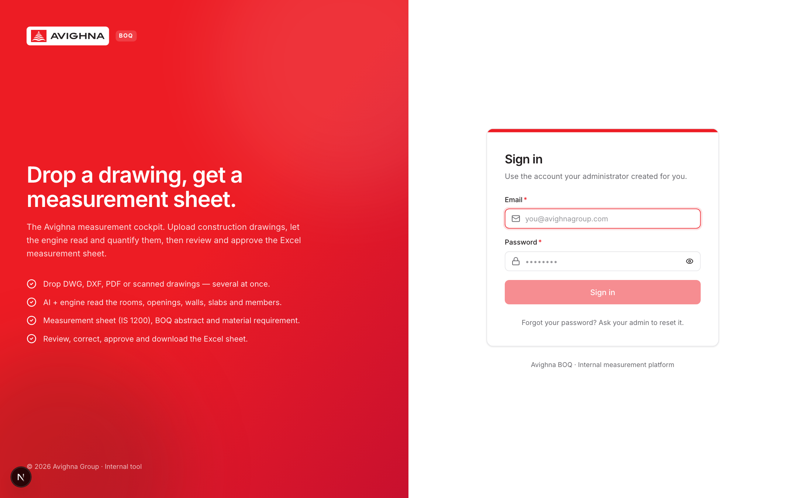
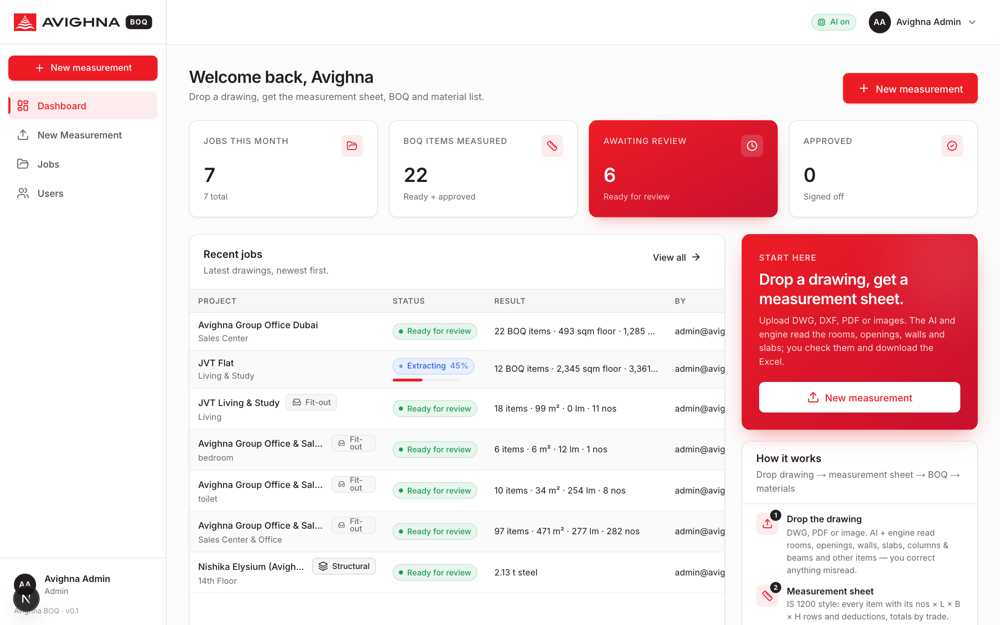
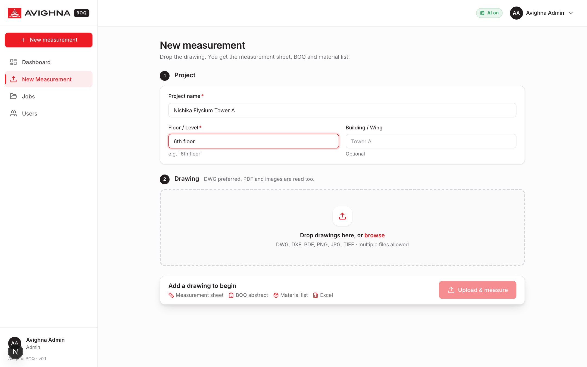
| Project name required | The project the drawing belongs to. Appears in the Excel title and the job list. |
| Floor / Level required | Which floor or area the drawing shows, e.g. "6th floor", "Sales centre", "Typical floor 6–17". Used in every measurement-sheet row and lets you compare floors later. |
| Building / Wing | Optional: tower or wing name. |
| Drawing files | Drop one or more files: DWG (best — exact vector text and geometry), DXF, PDF (vector plots are read exactly; scanned PDFs are read from the image), PNG / JPG / TIFF. Up to 200 MB per upload. |
Click Upload & measure. The browser shows the upload progress and then opens the job page.
The job page shows the current status at the top and a Pipeline panel on the right with every step and its time. You can leave the page; processing continues on the server.
| Status | What is happening | Typical duration |
|---|---|---|
| Queued | Waiting for a free worker. | seconds |
| Converting | DWG files are converted to DXF (LibreDWG); the real file type is detected from the bytes, not the extension. | 5–90 s per DWG |
| Analysing | Every sheet is read into a text inventory (exact vector text with coordinates), a preview image is rendered, and the sheet is classified (floor plan, finishes plan, door schedule, elevation, …). | 10 s – 3 min per sheet |
| Extracting | The AI reads each relevant sheet (image + exact text + measured CAD facts) into elements. Sheets that cannot help (cover, perspective, notes) are skipped. | 1–3 min per sheet when the AI service is responsive; up to 10 min on a slow day |
| Quantifying | The deterministic engine builds the measurement sheet, BOQ and materials. No AI is involved here. | < 1 s |
| Ready for review | Done. Elements and results can be checked, corrected and downloaded. | — |
| Approved | A reviewer signed the job off. It is read-only until it is sent back. | — |
| Failed | Something stopped the job; the last pipeline message says what (e.g. "No sheets could be read"). Fix the input and Reprocess. | — |
Above the Pipeline panel the Drawing preview card shows the rendered sheet of the uploaded drawing (the first sheet, with a thumbnail strip when there are several). Click the image to open it full-screen in high resolution: zoom with the mouse wheel or the + / − buttons, drag to pan, Fit shows the whole sheet, 100% shows it pixel for pixel, and Download saves the PNG. Use it to check the drawing against the elements without opening AutoCAD. Jobs processed before this feature show the standard-resolution image until they are reprocessed.
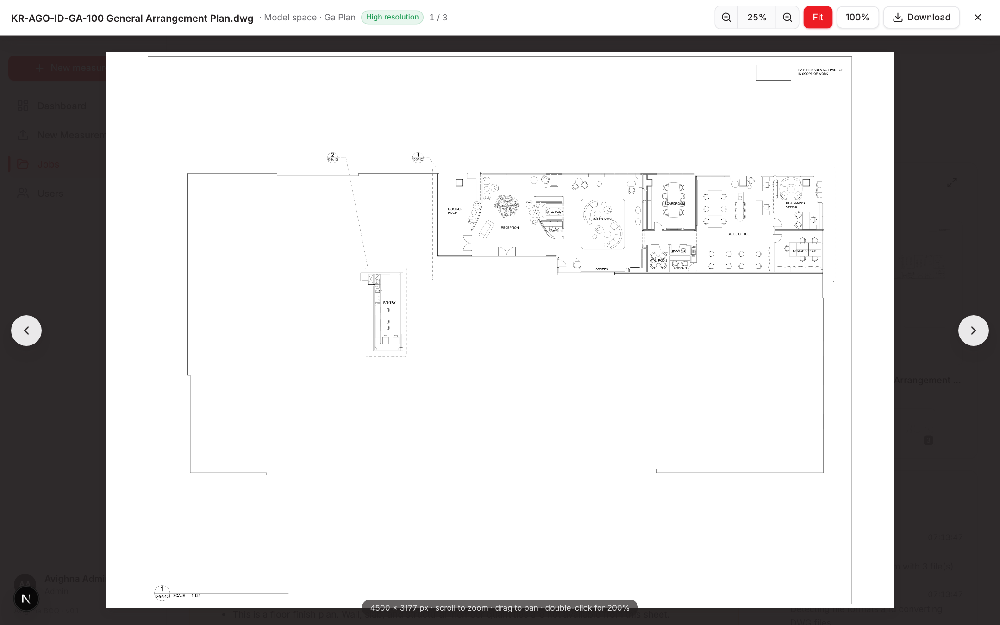
This is the most important screen. The measurement sheet, BOQ and materials are all computed from what is on this tab, so five minutes here decide the quality of the whole output.
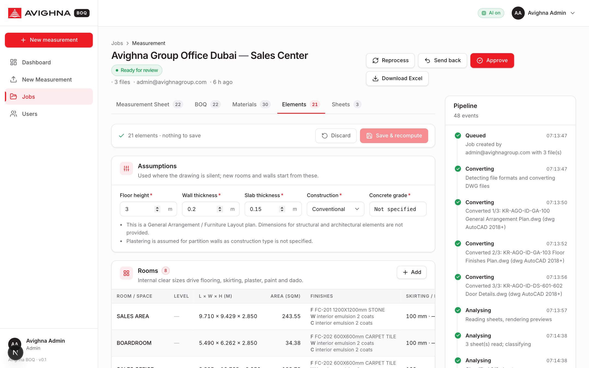
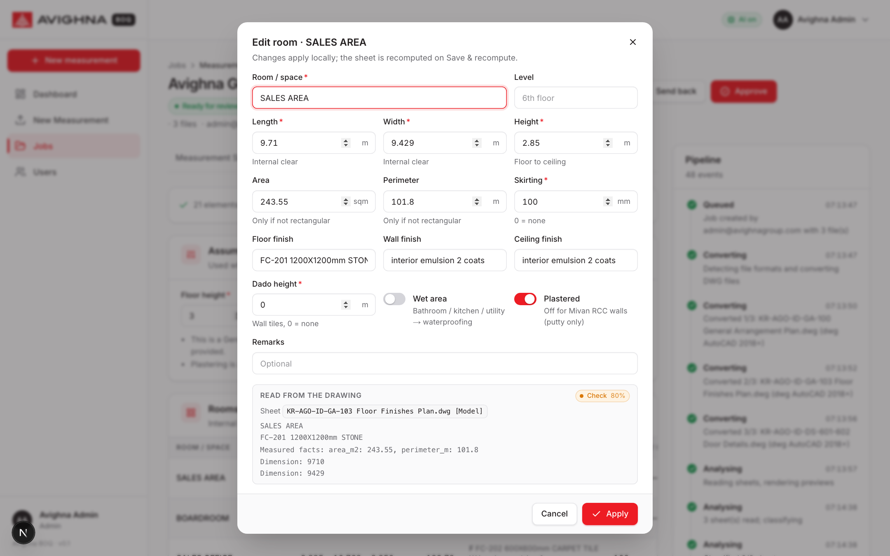
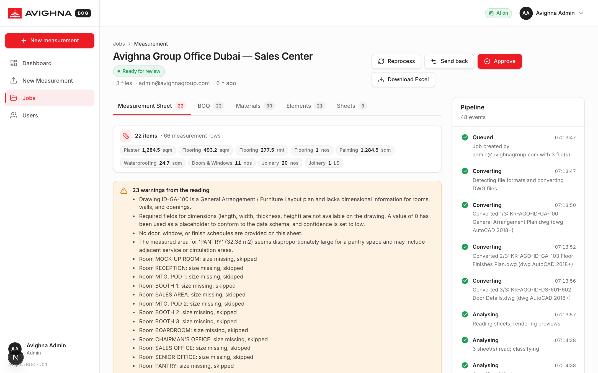
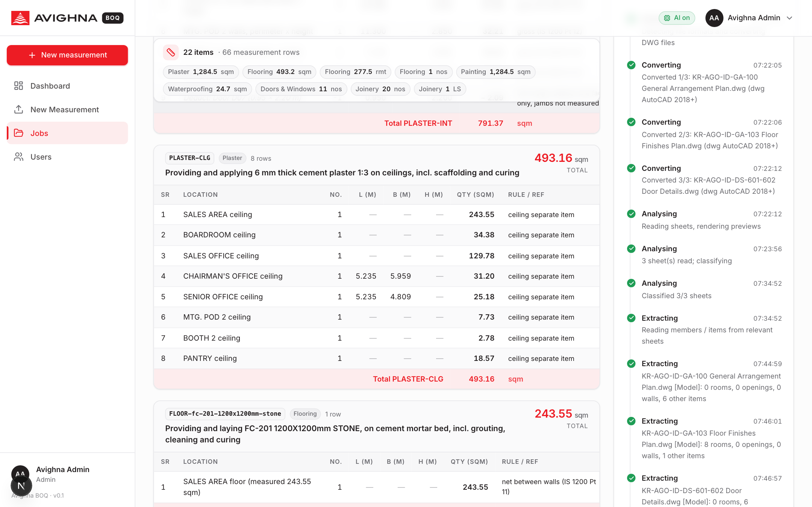
| Column | Meaning |
|---|---|
| Sr | Row number inside the block. |
| Location | What and where: "Wall W2, Bedroom 1, 6th floor", "Deduct: Door D1 in W2". This is the link back to the drawing. |
| No. | How many of this object (negative for deductions; for formwork it is the number of faces). |
| L, B, H (m) | Length, breadth, height in metres. A blank B or H means that dimension is not part of the item (e.g. plaster is L × H). |
| Qty | No. × L × B × H in the item's unit (cum, sqm, rmt, nos). |
| Rule / ref | The measurement rule applied (e.g. "IS 1200 Pt 12: opening > 3 sqm, both faces + jambs") or the source ("door schedule"). |
The summary strip shows the totals per trade (RCC in cum, Plaster / Flooring / Painting in sqm, Doors in nos, …). The amber box lists warnings from the reading — read them before trusting the numbers.
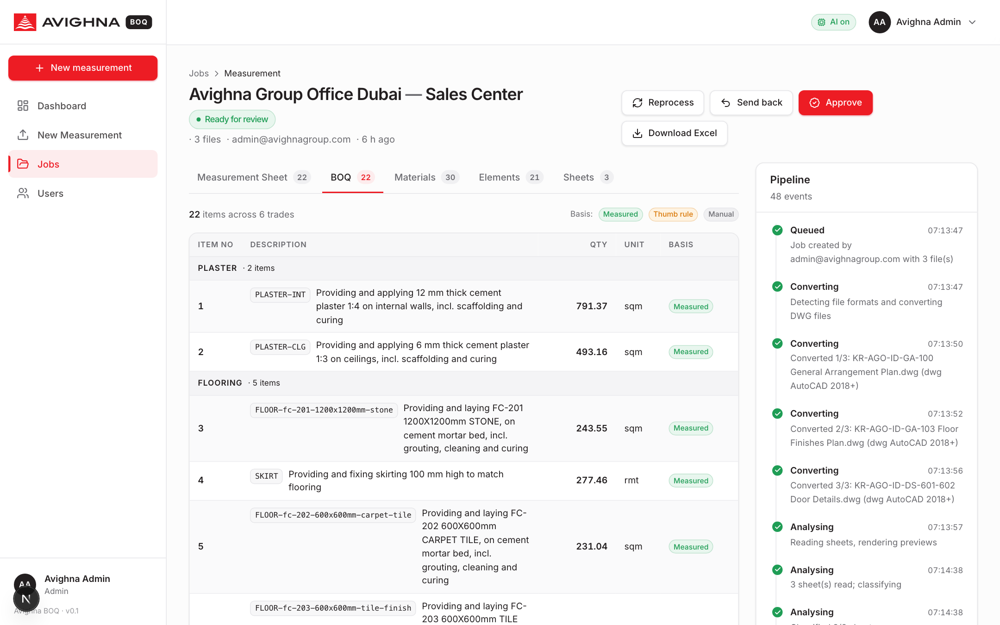
BOQ — the abstract. Item number, CPWD-style description, quantity, unit and basis. measured means the quantity comes from measured drawing objects; thumb rule is used only for reinforcement steel and must be replaced by a bar bending schedule before tender.
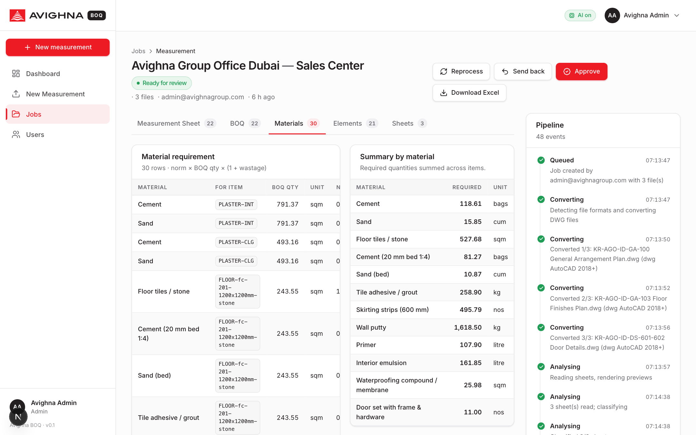
Materials — for each BOQ line, the materials it consumes. Required = BOQ qty × norm × (1 + wastage %). The norms are company standards (Appendix B); an admin can tune them. The summary table at the bottom adds up each material across all items (e.g. total cement bags for plaster + flooring + masonry).
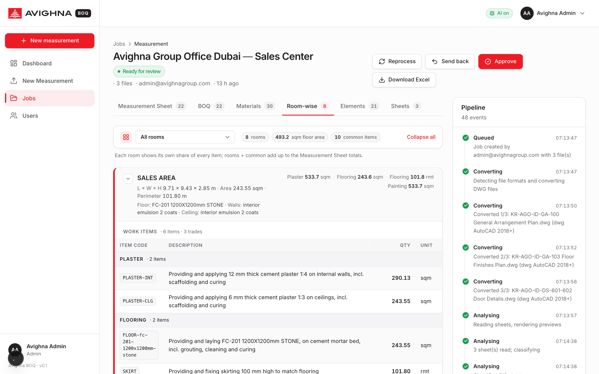
Room-wise — the same quantities regrouped by room, for clients and site teams who want to know what goes into each room. Pick a room from the selector or view all. Each card shows the room's size, area, perimeter and finishes, then three tables: Work items (this room's share of every BOQ item, e.g. its flooring, skirting, plaster, paint, dado, waterproofing), Doors, windows & other items (with the count that falls in this room — a door type shared by several rooms is split between them), and Materials for this room (cement, sand, tiles, paint … computed from this room's items) with a summary by material. RCC walls, slabs, columns and beams, and anything marked "various" go to the Common / whole floor card at the end. Rooms plus common always add up to the Measurement Sheet totals.
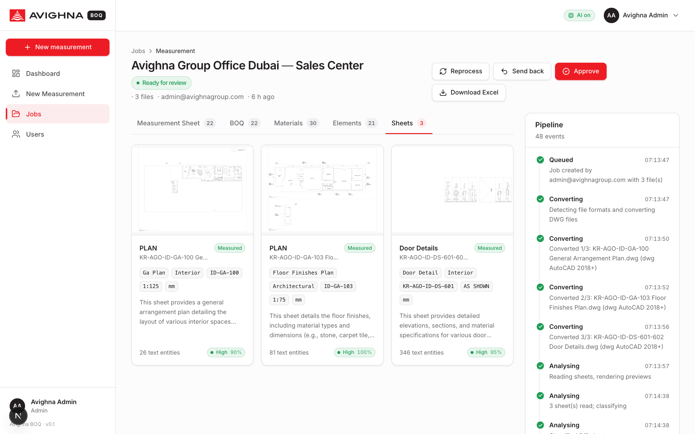
Sheets — what the system saw: each file / page / layout, its preview image, the detected sheet type (floor plan, finishes plan, door schedule, elevation, …), units, drawing number, and processing notes. Use it to confirm that the right sheets were read and that previews rendered.
| Button | Who | What it does |
|---|---|---|
| Reprocess | Everyone | Runs the whole pipeline again on the same files (after a settings change, or when the AI service was down). Manual edits are replaced by the new reading. |
| Save & recompute (Elements tab) | Everyone | Saves corrected elements and recomputes measurement, BOQ and materials. |
| Approve | Reviewer, Admin | Signs the job off. Status becomes Approved; the job is read-only; the Excel is marked approved. |
| Send back | Reviewer, Admin | Returns an approved or ready job for correction with a note that is shown on the job and stored in the audit log. |
| Download Excel | Everyone | Available once the job is Ready for review or Approved. The file name carries the project, level and version. |
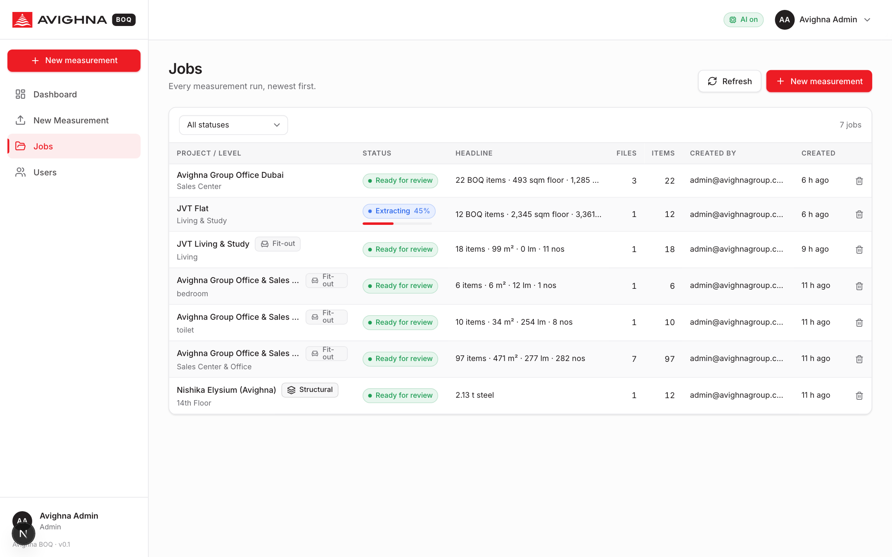
The workbook is produced by the server from the current elements. All arithmetic is written as live Excel formulas, so an estimator can see and audit every number.
| Tab | Contents | Formulas |
|---|---|---|
| Measurement Sheet | Title with project, level and drawing numbers. One block per item: item code and description row, then rows Sr | Location | No. | L | B | H | Qty | Unit | Rule / ref. Deduction rows are grey, totals light red. | Qty =C*D*E*F (blank dimensions are skipped); block total =SUM(...). |
| BOQ (Abstract) | Item | Description | Qty | Unit | Rate (INR) | Amount (INR) | Basis, grouped by trade. Total, GST @ 18 % and grand total rows at the end. | Qty ='Measurement Sheet'!G<total row>; Amount =Qty*Rate; totals =SUM. |
| Material Requirement | Material | For item | BOQ qty | Unit | Norm per unit | Wastage % | Required | Material unit | Basis; then a summary by material. | Required =C*E*(1+F/100); BOQ qty linked to the measurement sheet. |
| Tender vs Site | Template per item: Tender qty (linked), Site measured qty (blank, for the site engineer), Difference and Variation %. | Difference and % as formulas. |
| Elements (from drawing) | The rooms, openings, walls, slabs, members and other items exactly as read / corrected, with confidence, evidence and source sheet. | — |
The engine follows IS 1200 (method of measurement of building works) and common Indian QS practice. The rules below are what the measurement sheet applies; every row names the rule it used.
| Item | Rule |
|---|---|
| Flooring (per finish) | Room area (L × W, or the measured area if the drawing gives one). One BOQ item per finish type (e.g. "FC-201 1200×1200 stone"). |
| Skirting | Room perimeter minus the widths of the doors in that room (100 mm high by default, per room). |
| Internal plaster | Perimeter × height for plastered rooms. Openings: ≤ 0.5 sqm — no deduction; 0.5 to 3 sqm — deduct one face; > 3 sqm — deduct both faces and add jambs and soffits. |
| Ceiling plaster / paint | Room area. |
| Wall paint | Same area as internal plaster, same opening rule; the paint system comes from the room's wall finish. |
| Dado (wall tiles) | Wet areas only: perimeter × dado height, minus door widths × dado height. |
| Waterproofing | Wet areas only: floor area + 300 mm upturn along the perimeter. |
| Doors / windows | Counted in nos from the openings list (one item per tag, size and description in the text). Windows also give an area for fabricated items. |
| RCC walls | Nos × L × thickness × H minus openings (Nos × W × thickness × H). |
| Formwork to walls | Contact area, both faces: 2 × L × H minus 2 × opening area. |
| Columns | Concrete W × D × storey height; formwork = perimeter × height (4 sides). |
| Beams | Concrete W × (D − slab thickness) × L (the part below the slab); formwork = 2 sides + soffit. |
| Slabs | Concrete L × W × thickness; formwork = soffit minus beam widths. |
| Block masonry | cum for walls ≥ 150 mm (L × thickness × H minus openings); sqm for thinner partitions. |
| Reinforcement steel | Thumb rule, flagged in the BOQ: walls 125, columns 200, beams 150, slabs 85 kg per cum. Replace with the bar bending schedule for tender. |
| Other items | Taken as given (nos / rmt / sqm / LS) and placed under their trade. |
Rounding: dimensions are kept to 3 decimals; quantities are rounded to 3 decimals in the app and left as formulas in Excel.
The AI (Google Gemini 2.5 Pro) does not estimate areas from a picture. For each sheet it receives three things: the preview image (for layout), the exact vector text of the drawing with coordinates (so numbers are never misread), and measured CAD facts computed by the engine from the DXF — room outlines with area and perimeter, hatch areas with their finish codes, door / window tag counts, polyline lengths. It returns the elements in a strict structure with confidence and evidence. The engine then does all the arithmetic.
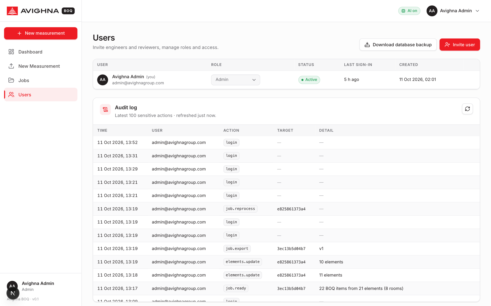
BOOTSTRAP_ADMIN_EMAIL / BOOTSTRAP_ADMIN_PASSWORD settings on first start.GET /api/v1/admin/backup).Material consumption norms and wastage percentages (Appendix B) and the steel thumb rules are company standards kept on the server. Change them through the Standards API (admin) and reprocess or recompute jobs to apply them; the Excel shows which norm was used on every material row.
| Variable | Purpose |
|---|---|
GEMINI_API_KEY | Turns AI reading on. Without it the app still runs with the deterministic fallback. |
GEMINI_MODEL_PRO / GEMINI_MODEL_FAST | Models for reading (default gemini-2.5-pro) and classification (gemini-2.5-flash). |
GEMINI_TIMEOUT_S | Maximum seconds per AI call (default 600). A hung call fails cleanly and the fallback is used. |
DATABASE_URL | PostgreSQL connection (Supabase in production). Without it a local SQLite file is used. |
STORAGE_BACKEND + Supabase keys | supabase stores uploads, previews and exports in Supabase Storage; otherwise the local data folder. |
CORS_ORIGINS | Allowed browser origins (the Vercel URL); *.vercel.app and *.onrender.com are allowed by default. |
BOOTSTRAP_ADMIN_EMAIL / …_PASSWORD | First admin account. |
MAX_UPLOAD_MB, WORKER_THREADS, LIBREDWG_BIN | Upload limit (200), parallel jobs (2), path to the DWG converter. |
Secrets (API keys, database passwords, the Supabase service key) live only in the hosting provider's environment settings. They are never stored in the repository or shown in the app.
| Web app (frontend) | Next.js 15 / React 19, hosted on Vercel (avighna-boq.vercel.app). Talks to the API over HTTPS with a signed-in token. |
| API (backend) | Python FastAPI, hosted on Render as a Docker container (avighna-boq.onrender.com). Contains the DWG converter (LibreDWG 0.13.4), the sheet readers, the AI wrapper, the measurement engine and the Excel writer. Two worker threads process jobs in the background. |
| Database and files | Supabase: PostgreSQL for users, jobs, sheets, elements, results and the audit log (row-level security enabled); Supabase Storage for uploaded drawings, previews and Excel files. |
| AI | Google Gemini 2.5 Pro (reading) and 2.5 Flash (classification), called from the API only. |
| Deployment | Every push to the main branch of github.com/ajs-avg/Avighna-BOQ redeploys Vercel (about 1 minute) and Render (about 10 minutes, because the DWG converter is built from source). |
git clone https://github.com/ajs-avg/Avighna-BOQ.git cd Avighna-BOQ # backend (Python 3.12 virtual environment with uv) cd backend && uv venv --python 3.12 .venv && uv pip install --python .venv/bin/python -r requirements.txt cp .env.example .env # set BOOTSTRAP_ADMIN_*, GEMINI_API_KEY, LIBREDWG_BIN ./run.sh # API on http://localhost:8000 # frontend (new terminal) cd frontend && npm install && npm run dev # app on http://localhost:3000 # or both at once from the repo root tools/dev.sh
Tests: cd backend && PYTHONPATH=. .venv/bin/python -m pytest tests -q (49 tests, SQLite) and tools/test_postgres.sh (same tests on an embedded PostgreSQL). Frontend: npm run typecheck && npm run lint && npm run build.
| Symptom | Cause and what to do |
|---|---|
| "Cannot reach the API … Is the backend running?" on the sign-in page | The API is down or waking up (Render free instances sleep after idle and take about a minute to wake). Wait and retry; on a laptop start the backend. |
| Banner "AI reading is off" | No GEMINI_API_KEY on the server. Rooms come from CAD outlines only. Ask the admin to set the key, then Reprocess. |
| Job finished in seconds with strange rooms ("Entrance 44 × 44 m") | The AI did not run (no key, service down, or no readable sheet). Check the pipeline messages and the Sheets tab; reprocess once the service is back. |
| "preview could not be rendered" | Drawing too heavy to draw in time. Reading continues from text and CAD facts. Purge the DWG or upload the PDF plot as well. |
| "DWG conversion failed for …" | The file is not a DWG, is password-protected, or uses a format the converter cannot read. Save as AutoCAD 2018 DWG or DXF and upload again. |
| Job Failed: "No sheets could be read" | None of the files produced a readable sheet (empty PDF, image-only PDF with no content, corrupt file). Check the files and re-upload. |
| "Room X: size missing, skipped" | No dimensions found for that room. Add L × W on the Elements tab or include the dimensioned plan. |
| "Door D5: room 'RECEPTION' not found …" | The door schedule names a room that is not in the Rooms list, so no deduction was made. Add the room or correct the door's room field. |
| Processing is slow (10 minutes per sheet) | Usually the AI service is slow that day; the job still completes. Large DWGs also take longer to convert and render. |
| Server memory limit on Render ("instance exceeded memory") | A very large DXF needs more RAM than the instance has. The app skips files above its limit with a message; the admin can move to a larger instance (2 GB recommended). |
| Download Excel is disabled | The job is not yet Ready for review, or there are unsaved element edits — save or discard first. |
| Approve is disabled | Only reviewers and admins can approve, only jobs in Ready for review, and not while edits are unsaved. |
Can I measure a PDF without the DWG? Yes. A vector PDF (plotted from CAD) keeps exact text and is read well; a scanned PDF is read from the image with lower confidence.
Does the app price the BOQ? No. Rates are blank by design; the estimator fills them in Excel and the amount formulas take over.
Where does steel come from? From thumb rules (kg per cum of concrete), clearly marked. Use the bar bending schedule for tender quantities.
Can I change the consumption norms? Yes, an admin can update them on the server (Standards). The Excel shows the norm used on every row.
Is my drawing sent anywhere? The drawing is stored in the company's Supabase storage and the sheet image plus text is sent to Google's Gemini API for reading. No other third party is involved.
Each block on the measurement sheet and each BOQ line carries an item code. Codes are stable so sheets can be compared across jobs.
| Code | Unit | Item |
|---|---|---|
| RCC-WALL / RCC-COL / RCC-BEAM / RCC-SLAB | cum | Reinforced concrete in walls, columns, beams, slabs (grade from Assumptions). |
| FW-WALL / FW-COL / FW-BEAM / FW-SLAB | sqm | Formwork (shuttering) contact area for the same members. |
| STEEL | kg | Reinforcement steel by thumb rule (basis: thumb rule). |
| BLOCK-CUM / BLOCK-SQM | cum / sqm | Block masonry: thick walls in cum, thin partitions in sqm. |
| PLASTER-INT / PLASTER-CLG | sqm | Internal wall plaster 12 mm; ceiling plaster 6 mm. |
| FLOOR-<finish> | sqm | Flooring, one item per finish (e.g. FLOOR-fc-201-1200x1200mm-stone). |
| SKIRT | rmt | Skirting to match flooring. |
| DADO | sqm | Wall tiles in wet areas up to the dado height. |
| PAINT-WALL / PAINT-CLG | sqm | Putty, primer and emulsion on walls / ceilings (system from the room's finish). |
| WP | sqm | Waterproofing to wet areas, floor plus 300 mm upturn. |
| DOOR-<tag> / WIN-<tag> | nos / sqm | Doors and windows, one item per tag with size and description. |
| MISC-<trade>-n | as given | Other countable items (joinery, electrical, plumbing, sanitary, miscellaneous). |
Trades appear in this order: RCC, Masonry, Plaster, Flooring, Wall tiles, Painting, Waterproofing, Doors & Windows, Joinery, Plumbing, Electrical, Sanitary, Miscellaneous.
Required material = BOQ quantity × norm × (1 + wastage %). These defaults follow common Indian estimating practice and can be changed by an admin.
| For item | Material | Norm per unit | Unit | Wastage |
|---|---|---|---|---|
| RCC (per cum) | Ready-mix concrete | 1.0 | cum | 2 % |
| STEEL (per kg) | TMT bars Fe500D / Binding wire | 1.0 / 0.009 | kg | 3 % / 0 % |
| Formwork (per sqm) | Shuttering oil | 0.08 | litre | 0 % |
| Block masonry (per cum) | AAC blocks 600×200×200 / Cement (1:4) / Sand | 41.7 / 1.2 / 0.15 | nos / bags / cum | 3 / 3 / 5 % |
| Block partition (per sqm) | AAC blocks 600×200×150 / Cement / Sand | 8.3 / 0.18 / 0.022 | nos / bags / cum | 3 / 3 / 5 % |
| Internal plaster 12 mm (per sqm) | Cement / Sand | 0.105 / 0.0144 | bags / cum | 3 / 5 % |
| Ceiling plaster 6 mm (per sqm) | Cement / Sand | 0.065 / 0.0075 | bags / cum | 3 / 5 % |
| Flooring (per sqm) | Tiles or stone / Cement (20 mm bed 1:4) / Sand / Adhesive-grout | 1.0 / 0.16 / 0.021 / 0.5 | sqm / bags / cum / kg | 7 / 3 / 5 / 5 % |
| Skirting (per rmt) | Skirting strips (600 mm) | 1.67 | nos | 7 % |
| Dado (per sqm) | Wall tiles / Tile adhesive | 1.0 / 4.0 | sqm / kg | 7 / 5 % |
| Paint (per sqm) | Wall putty / Primer / Interior emulsion | 1.2 / 0.08 / 0.12 | kg / litre / litre | 5 % each |
| Waterproofing (per sqm) | Compound / membrane | 1.0 | sqm | 5 % |
| Doors (per nos) / Windows (per sqm) | Door set with frame & hardware / Aluminium window fabricated to size | 1.0 | nos / sqm | 0 % |
Steel thumb rules (kg per cum of concrete): walls 125, columns 200, beams 150, slabs 85.
For integrators. All endpoints are under /api/v1, use JSON, and need the bearer token from POST /auth/login. Interactive documentation: /docs on the API host.
| Endpoint | Purpose |
|---|---|
| POST /auth/login · POST /auth/set-password · GET /me | Sign in, change password, current profile. |
| POST /jobs (multipart) · GET /jobs · GET /jobs/{id} · DELETE /jobs/{id} | Create a job with files and fields project_name, level, location; list; read; delete. |
| GET /jobs/{id}/sheets · GET …/sheets/{sid}/preview · GET …/sheets/{sid}/extraction | Sheets of a job, preview image, raw AI extraction for a sheet. |
| PUT /jobs/{id}/elements | Replace the element list (rooms, openings, walls, slabs, members, misc, assumptions) and recompute. |
| POST /jobs/{id}/reprocess · POST /jobs/{id}/recalculate | Run the pipeline again; recompute from current inputs. |
| POST /jobs/{id}/approve · POST /jobs/{id}/reject | Reviewer sign-off / send back with a reason. |
| GET /jobs/{id}/export.xlsx | Download the workbook (ready or approved jobs). |
| GET /stats · GET /system · GET /ai/status · GET /standards · PUT /standards | Dashboard counters, system info, AI status, company standards (PUT is admin). |
| GET /admin/users · POST /admin/invite · PATCH /admin/users/{uid} · POST …/reset-password · DELETE … | User management (admin). |
| GET /admin/audit · GET /admin/backup | Audit log and database backup (admin). |
The structural (members / items) endpoints from the earlier release remain available for old jobs only.
| BOQ | Bill of Quantities — the list of work items with quantities (and, when priced, rates and amounts). |
| Measurement sheet | The detailed working that shows how each BOQ quantity was derived, object by object. |
| IS 1200 | Indian Standard "Method of measurement of building and civil engineering works"; defines what to measure, in which unit, and which deductions to make. |
| CPWD description | The standard wording of work items used by the Central Public Works Department (e.g. "Providing and laying …"). |
| Deduction | A minus row that removes the area or volume of an opening or overlap from an item. |
| Contact area | Formwork is measured by the area of shuttering in contact with concrete. |
| Thumb rule | An approximate ratio used when detailed data is not available (e.g. kg of steel per cum of concrete). |
| Norm | Standard consumption of a material per unit of work (e.g. 0.105 bags of cement per sqm of 12 mm plaster). |
| Wastage | Extra material allowed for cutting, breakage and handling, as a percentage. |
| DWG / DXF | AutoCAD drawing formats; DXF is the open text version the readers use. |
| Model space / layout | In CAD, the model space holds the real-size drawing; layouts are the plotted sheets. |
| Hatch | A filled pattern in CAD that marks an area (e.g. a floor finish zone). |
| Mivan | Aluminium-formwork construction where walls and slabs are cast in RCC monolithically. |
| Tender vs Site | Comparison of the quantities estimated at tender with those measured on site during execution. |
Avighna BOQ · User & Operations Guide · Rev 3 · 11 October 2026 · Internal document